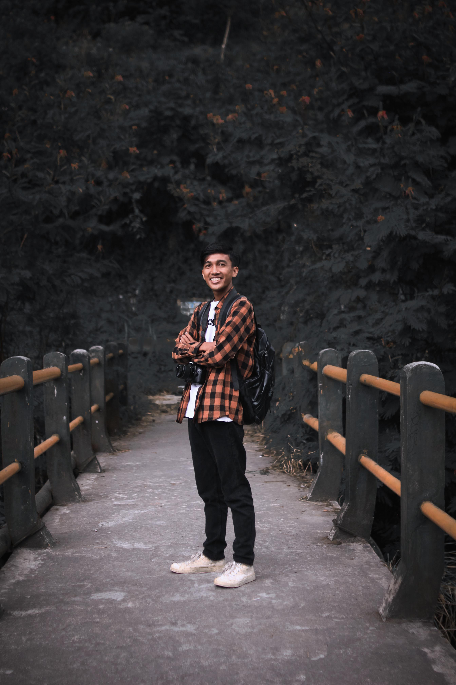

Nama saya M.Syukron, saya mahasiswa semester 3 di Universitas Ahmad Dahlan, Program Studi Sistem Informasi. Saya memiliki minat yang kuat dalam pengembangan sistem informasi dan teknologi, khususnya dalam bagaimana teknologi dapat diintegrasikan dengan berbagai aspek kehidupan untuk memberikan solusi yang efektif dan efisien..
telepon: 082246732236
instagram: Syukronn_07
Email: syukronalhafidz61@gmail.com
LinkedIn: M Syukron